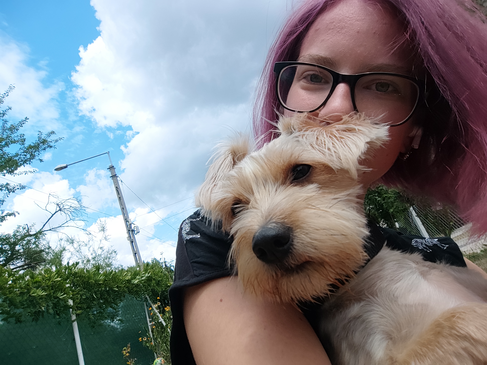
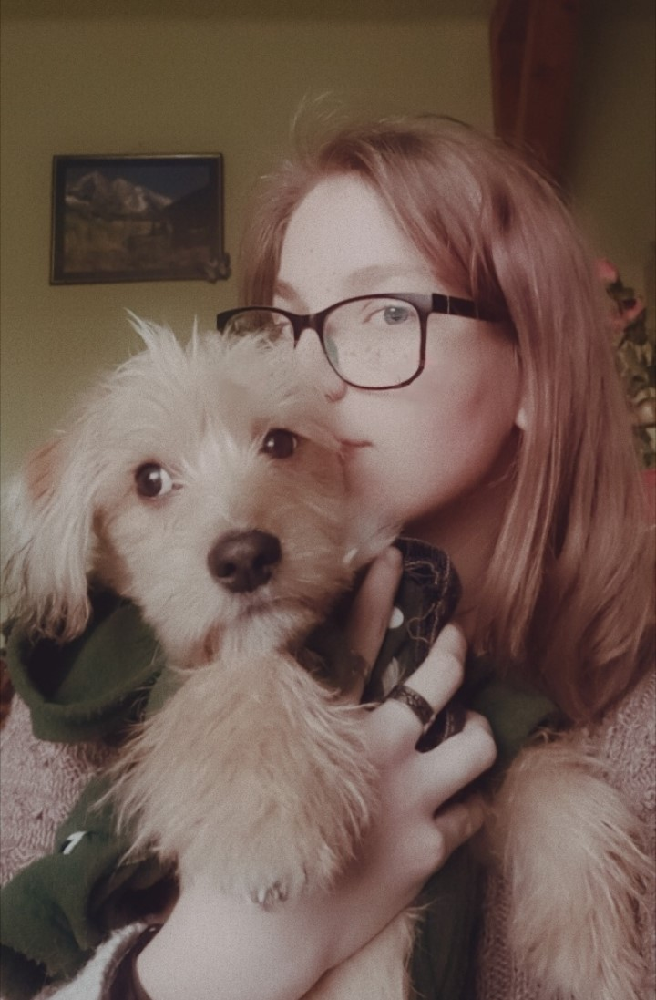
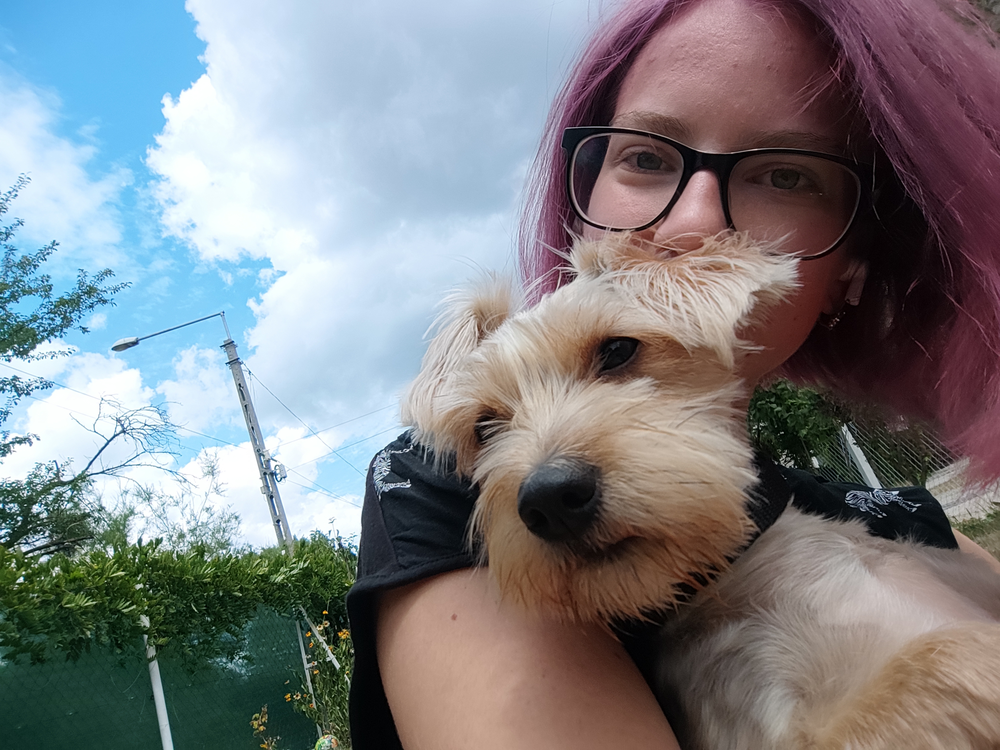
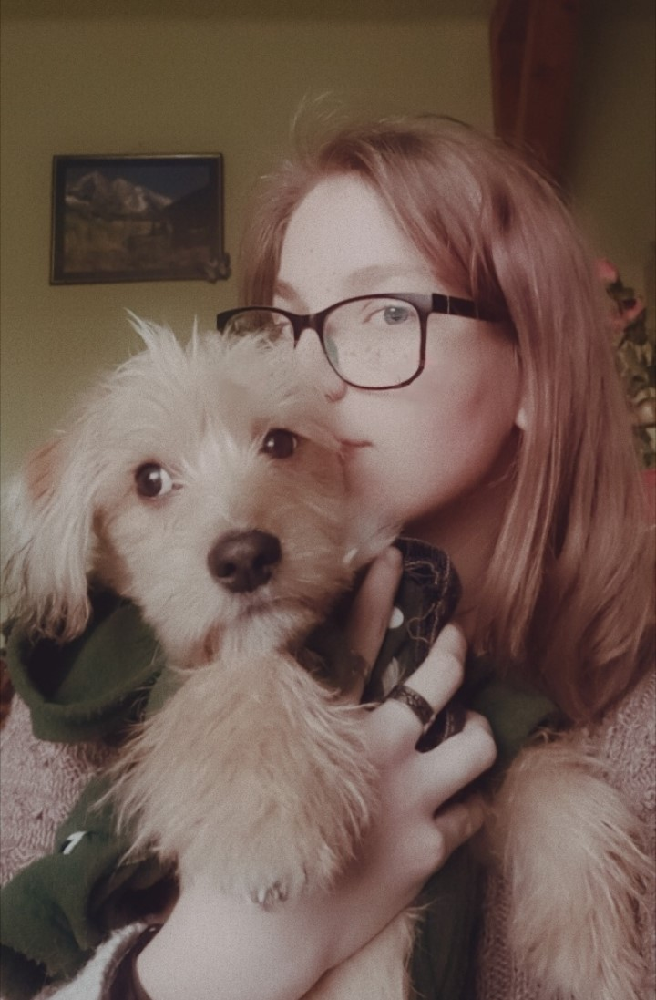
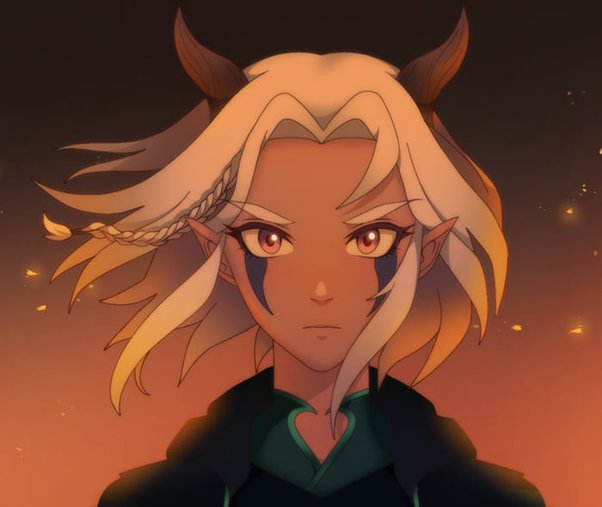
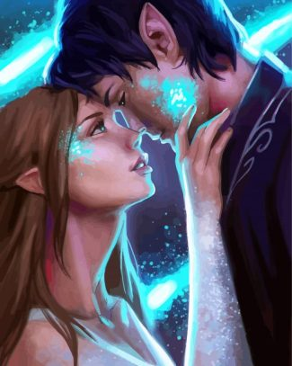
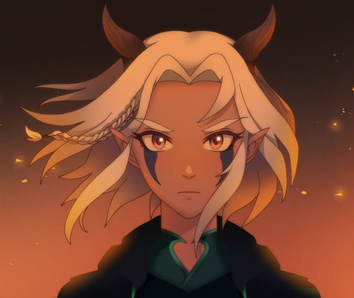
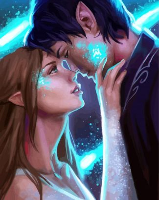

Magamról:
Ábrahám Leila vagyok, 20 éves szoftverfejlesztő tanuló. Mindenem a fantasy világok, határozott véleményem, hogy a tündérek/tündék/elfek a legelsők a ranglistán.
Hobbyk, egyéb elfoglaltságok:
Szabadidőmben szívesen olvasok, szinte minden műfajból. Szeretem a fantasy, krimi, valamint a romantikus könyveket egyaránt. Emellett sokat kirándulok, van egy kutyám akivel rendszeresen járok is. Szívesen nézek filmeket és sorozatokat, ezekből inkább a krimit és a fantasyt.
 



 



Ha egyedül vagyok, rengeteg zenét hallgatok, a zenei ízlésem nagyon.. változatos. Mindent meghallgatok, ami tetszik. Most itt is hagyok két dalt a kedvenceim közül, hátha valakinek megtetszik: